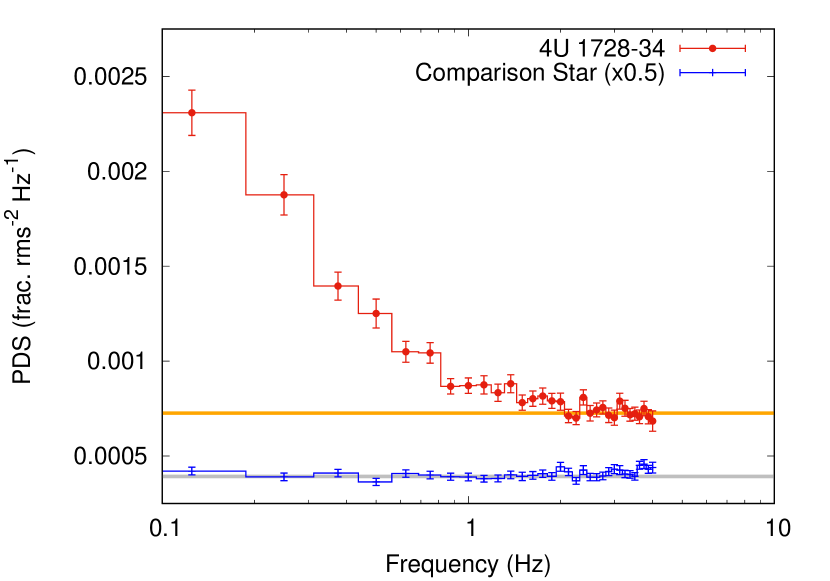
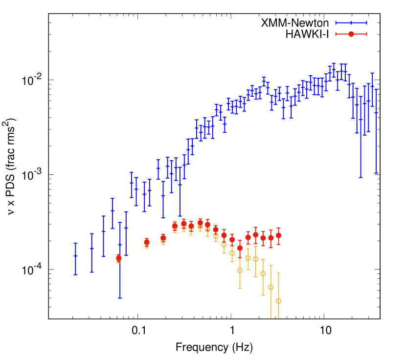
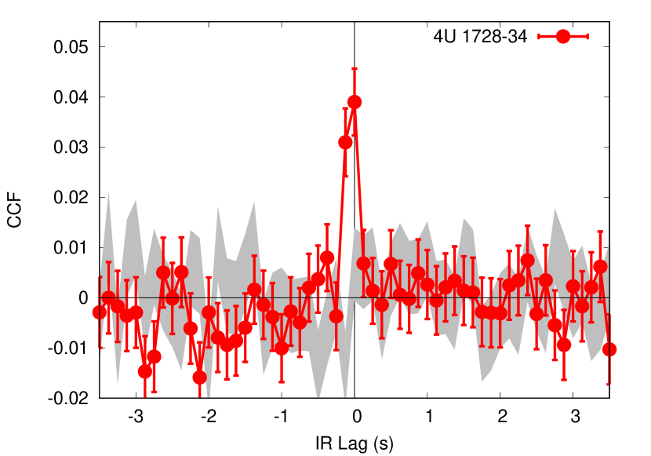
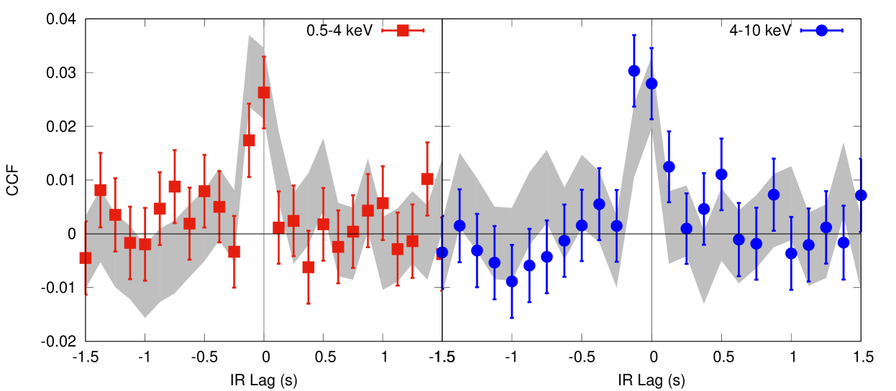
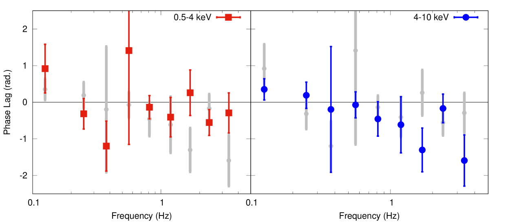
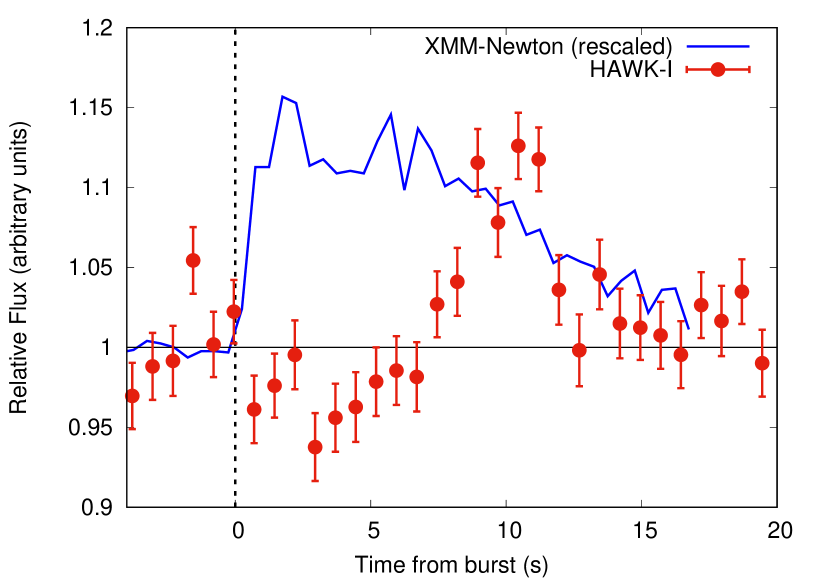
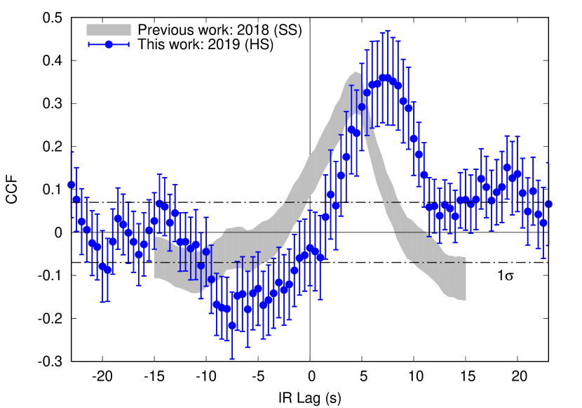
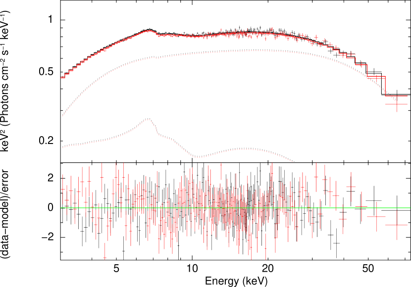

تغير تحت الأحمر دون الثانية من النجم النيوتروني المراكم النموذجي 4U 1728-34
الملخص
نقدم تقريرا عن أول رصد متزامن عالي الدقة الزمنية في الأشعة السينية وتحت الحمراء (IR) لثنائي سيني منخفض الكتلة يحوي نجما نيوترونيا في حالته الصلبة. أجرينا h من الرصد المتزامن لـ 4U 1728-34 باستخدام HAWK-I@VLT وXMM–Newton وNuSTAR. أظهر المصدر تغيرا معنويا في الأشعة السينية وتحت الحمراء وصولا إلى مقاييس زمنية دون الثانية. وبقياس دالة الارتباط المتبادل بين منحنيي الضوء في تحت الأحمر والأشعة السينية، اكتشفنا ارتباطا معنويا مع تقدم تحت الأحمر بمقدار ms بالنسبة إلى الأشعة السينية. حللنا اعتماد التأخر على طاقة الأشعة السينية، فوجدنا زيادة هامشية نحو الطاقات الأعلى. ونظرا إلى إشارة التأخر، نفسر ذلك بوصفه دليلا محتملا على الكمتنة انطلاقا من فوتونات بذرية خارجية. نناقش أصل الفوتونات البذرية في تحت الأحمر من حيث إشعاع السيكلو-سنكروترون من تدفق ساخن ممتد. وأخيرا، رصدنا أيضا النظير تحت الأحمر لاندفاع سيني من النوع I، بتأخر قدره s. وعلى الرغم من احتمال وجود تأثيرات إضافية، فإننا، بافتراض أن هذا التأخر ناتج من زمن انتقال الضوء بين الجسم المركزي والنجم المرافق، نجد أن 4U 1728-34 لا بد أن تكون له فترة مدارية أطول من h وميل أكبر من 8∘.
keywords:
النجوم: نيوترونية – التراكم، أقراص التراكم – الأشعة السينية: ثنائيات1 المقدمة
الثنائيات السينية منخفضة الكتلة (LMXBs) هي أنظمة يكون فيها نجم نيوتروني (NS) أو ثقب أسود (BH) في حالة تراكم للمادة من نجم مرافق منخفض الكتلة. وخلال انفجاراتها، تعرض هذه الأنظمة توزيعا طيفيا عريضا ومعقدا للطاقة يتغير في مراحل نشاطها المختلفة. يمكن تمييز حالتين رئيسيتين (انظر مثلا Tananbaum et al., 1972; Fender et al., 2004; Migliari and Fender, 2006; Done et al., 2007; Lin et al., 2007; Belloni et al., 2011; Muñoz-Darias et al., 2014): ما يسمى “الحالة اللينة”، حيث يكون الانبعاث حراريا في معظمه، ناشئا من قرص تراكم سميك بصريا ورقيق هندسيا (يسيطر على الجزء اللين من طيف الأشعة السينية)؛ و“الحالة الصلبة”، حيث يهيمن على طيف الأشعة السينية قانون قدرة ذي قطع، بقيمة قطع نموذجية قدرها keV للنجوم النيوترونية وkeV للثقوب السوداء (Burke et al., 2017). ويفسر هذا المكون من حيث تدفق داخل سميك هندسيا ورقيق بصريا (يشار إليه أيضا باسم "الهالة")، يقوم بكمتنة فوتونات أشعة سينية ألين ناشئة من القرص (في الثقوب السوداء؛ Done et al., 2007; Zdziarski and Gierliński, 2004) أو من الطبقة الحدية (في النجوم النيوترونية؛ Lin et al., 2007). وفي الحالة الصلبة، يمكن لهذه الأنظمة أيضا أن تظهر طيفا مسطحا يمتد من الأطوال الموجية الراديوية إلى البصرية-تحت الحمراء، ويرتبط عادة بإشعاع سنكروتروني من نفاثة مدمجة (انظر مثلا Corbel and Fender, 2002; Russell et al., 2007; Migliari et al., 2010; Baglio et al., 2016; Díaz Trigo et al., 2018; Tetarenko et al., 2021).
من المقبول عموما أن هندسة تدفق التراكم حول الأجسام المدمجة المراكمة تتطور أثناء انفجاراتها (انظر مثلا Esin et al., 1997; Lin et al., 2007, 2009; Ingram and Done, 2010; De Marco et al., 2017; Wang et al., 2017, 2019; van den Eijnden et al., 2020; Méndez et al., 2022). ومع ذلك، لا تزال البنية الدقيقة للتدفق الداخل وصلته بالنفاثة موضع نقاش (Kalemci et al., 2022). ومن الخصائص الأساسية لـ LMXBs التي يمكن أن تساعد في الإجابة عن هذه الأسئلة المحورية وجود تغير عشوائي قوي، في الحالة الصلبة، عبر الطيف الكهرومغناطيسي وصولا إلى مقاييس زمنية دون الثانية (انظر مثلا Motch et al., 1982; van der Klis, 1994; Belloni et al., 2005; Tetarenko et al., 2021).
يحتوي نطاق فوق البنفسجي-البصري-تحت الأحمر (UV/O/IR) على مساهمات من ثلاثة مكونات باعثة تتغير على امتداد الانفجار وتعمل على مقاييس زمنية مختلفة: القرص المشعع، والنفاثة، ومساهمة من تدفق ساخن داخلي ممتد (Corbel and Fender, 2002; Corbel et al., 2013; Hynes, 2005; Gierliński et al., 2009; Migliari et al., 2010; Chaty et al., 2011; Buxton et al., 2012; Poutanen et al., 2014; Kosenkov et al., 2020). ولذلك فقد أثبتت دراسات التغير في هذه النطاقات أنها شديدة الفاعلية في تقييد خصائص LMXBs.
في السنوات الأخيرة، أتاح تطوير مقاييس ضوئية بصرية-تحت حمراء جديدة وسريعة نموا سريعا في الرصود متعددة الأطوال الموجية، المتزامنة تماما وعالية الدقة الزمنية، لـ BH LMXBs. وأظهر اكتشاف تأخر قدره s في ما لا يقل عن 3 ثقوب سوداء (GX 339-4، V404 Cyg وMAXI J1820+070) بين الأشعة السينية والانبعاث البصري-تحت الأحمر بوضوح أن تقلبات معدل تراكم الكتلة يمكن أن تنتقل من التدفق الداخل إلى النفاثة، حيث يعاد إصدارها على هيئة إشعاع سنكروتروني (Casella et al., 2010; Gandhi et al., 2010, 2017; Malzac, 2014; Paice et al., 2019). وقد فتح ذلك نافذة جديدة في دراسات فيزياء النفاثات، مقدما قيودا أساسية جديدة على سرعة النفاثة (Casella et al., 2010; Tetarenko et al., 2018; Zdziarski et al., 2022)، وارتفاع وامتداد منطقة الصدمة الأولى (Gandhi et al., 2017; Vincentelli et al., 2018; Paice et al., 2019) ونصف قطر الإطلاق (Vincentelli et al., 2019).
أدت رصود إضافية إلى اكتشاف ارتباط غير خطي بين النطاقين (Kanbach et al., 2001; Durant et al., 2011; Veledina et al., 2017; Vincentelli et al., 2021; Paice et al., 2021)، وكذلك تذبذبات شبه دورية في O-IR (Motch et al., 1983; Kalamkar et al., 2016; Vincentelli et al., 2019, 2021). وأشار ذلك إلى مساهمة أكثر من مكون متغير واحد في انبعاث O-IR (كما اقترحت أيضا دراسات O-IR طويلة الأمد؛ Kosenkov et al., 2020). ومن أكثر المرشحين الواعدين لتفسير هذه السمات المثيرة إشعاع سنكروتروني من المناطق الخارجية لتدفق داخلي ساخن ممغنط (Veledina et al., 2011). وقد أظهرت قلة من LMXBs، تشمل كلا من الثقوب السوداء والنجوم النيوترونية، أدلة محتملة على هذا المكون، لكن ليس واضحا تحت أي شروط يمكن له أن يهيمن على النفاثة (Degenaar et al., 2014; Veledina et al., 2017; Paice et al., 2021; Shahbaz et al., 2023).
على الرغم من غنى الظواهر في O-IR لدى BH LMXBs، ركز عدد قليل نسبيا من الدراسات على الخصائص السريعة متعددة الأطوال الموجية لـ NS LMXBs، ويرجع ذلك أساسا إلى انخفاض لمعانها11 1 متوسط لمعان الذروة في الأشعة السينية لدى BH LMXBs هو 71037 erg s-1 مقابل 3.81037 erg s-1 لدى NS LMXBs (Yan and Yu, 2015). علاوة على ذلك، فإن الثقوب السوداء ذات الكتلة النجمية أكثر سطوعا أيضا عند أطوال O-IR الموجية (1034erg s-1، مقابل 1033erg s-1؛ Russell et al., 2006).. وبسبب توهجاتها القوية وتغيرها غير الساكن، انصب معظم الاهتمام على الأجسام التي تراكم باستمرار بمعدلات عالية (أي ما يسمى “مصادر Z”؛ McGowan et al., 2003; Dubus et al., 2004; Durant et al., 2011; Shahbaz et al., 2023; Vincentelli et al., 2023)، أو النجوم النابضة الميلي ثانية الانتقالية (Shahbaz et al., 2015, 2018; Papitto et al., 2019; Baglio et al., 2019, 2023). ومع ذلك، لم تجر أي دراسة لـ NS LMXBs في حالتها الصلبة “المعيارية”.
هنا، نقدم أول رصد متزامن وسريع في IR/الأشعة السينية للنجم النيوتروني المراكم 4U 1728-34 (أو GX 354-0، RA: 17 31 57.73، DEC: -33 50 02.5) أثناء حالته الصلبة. هذا النظام نجم نيوتروني (NS) معروف جيدا ضعيف المغنطة يستدل على أنه يراكم من مانح فقير بالهيدروجين (Shaposhnikov et al., 2003; Galloway et al., 2010). ويصنف على أنه LMXB دائم من نمط Atoll ذي كثافة عمود هيدروجين مجرية عالية، cm-2 (Piraino et al., 2000; D’Aí et al., 2006; Díaz Trigo et al., 2018). الأنظمة من نمط Atoll هي مصادر للأشعة السينية يمكن أن تمر بانتقالات بين حالة لينة وحالة صلبة. وعندما تفعل ذلك، فإنها ترسم مسارات نمطية في مخطط لون-لون للأشعة السينية (أي ما يسمى فرعي “Island” و“Banana”)، وترتبط أيضا بتطور في خصائص التوقيت (انظر، مثلا، Hasinger and van der Klis, 1989; van der Klis, 2006). وتحديدا، كما لوحظ في BH LMXBs، فإن مكونات الضجيج عريض النطاق في طيف القدرة السيني، إلى جانب تذبذباته شبه الدورية، تتطور نحو ترددات أعلى مع اقتراب المصدر من طور ألين وأعلى لمعانا (انظر، مثلا Psaltis et al., 1999; Homan et al., 2007; Altamirano et al., 2008). وبالتفصيل، رغم أن مدة هذه الحالات يمكن أن تختلف اختلافا كبيرا من مصدر إلى آخر (انظر مثلا van der Klis, 2006; Muñoz-Darias et al., 2014, والمراجع الواردة فيه)، فإن 4U 1728-34 يمر بانتقالات منتظمة في الحالة كل يوم (Muñoz-Darias et al., 2014, للكشف السابق عن هذه الدوريات انظر أيضا: Kong et al. 1998; Galloway et al. 2003)
كشفت رصود حديثة في الأشعة السينية/تحت الحمراء في الحالة اللينة أول نظير تحت أحمر لاندفاع من النوع I (Vincentelli et al., 2020). وتنشأ هذه الومضات السينية السريعة من انفلات نووي حراري على سطح النجم النيوتروني (Hansen and van Horn, 1975; Woosley and Taam, 1976). وعادة ما يرتبط النظير منخفض الطاقة (المكتشف عند أطوال UV/O/IR الموجية) لهذه الأحداث بالانبعاث المعاد معالجته من القرص والنجم المرافق. ومن ثم يمكن استخدام التأخر بين الأشعة السينية وانبعاث UV/O/IR لتقييد المعلمات المدارية لهذه الأنظمة (انظر مثلا Hynes et al., 2006; Muñoz-Darias et al., 2007; Vincentelli et al., 2020).
2 البيانات
2.1 الأشعة تحت الحمراء: HAWK-I@VLT
أجرينا رصودا فوتومترية عالية الدقة الزمنية لـ 4U 1728-34 باستخدام HAWK-I (Pirard et al., 2004)، المثبت على UT4 في Very Large Telescope في Cerro Paranal، تشيلي. نفذت الرصود في 2019-03-23 (MJD 58565) بين 06:34 و08:34 UTC في نمط FastPhot (معرف البرنامج: 0102.D-0182) باستخدام نافذة من حاويات، مما أتاح لنا بلوغ دقة زمنية قدرها 0.125s. سجلت البيانات في N = 200 مكعبا بياناتيا من 250 إطارا لكل منها، تفصل بينها فجوات قدرها s. ثم قسنا منحنى الضوء بعد طرح الخلفية من الهدف ومن نجم مرجعي ساطع ونجم مقارنة باستخدام برمجية ULTRACAM (Dhillon et al., 2007). ولئلا نفقد تتبع النجوم، ثبت الموضع النسبي للهدف ونجم المقارنة بالنسبة إلى النجم المرجعي. وضمن مكعب واحد كان موضع الفتحة قادرا على تعديل موقعه متتبعا النجوم. حددت مجموعة واحدة من أنصاف أقطار فتحات الاستخراج لكل مكعب من أجل أخذ تغيرات الرؤية طويلة الأمد في الحسبان. ولإزالة أي تأثيرات زائفة إضافية، قمنا بعد ذلك بتطبيع منحنى ضوء الهدف إلى النجم المرجعي (VVV J173159.32-335001.92, K). أظهر منحنى الضوء المستخرج من نجم مقارنة قريب (VVV J173200.33-335005.87, K) منحنى ضوء مستقرا بلا اتجاهات طويلة الأمد. وكان القدر المتوسط لـ 4U 1728-34 هو (mJy، وهو تدفق مماثل للقياسات السابقة التي أجراها Díaz Trigo et al., 2018). تعرض جزء من المكعبات لفقدان بضعة إطارات. لذلك، عند النظر في الارتباط المتبادل مع الأشعة السينية، استبعدت هذه المكعبات من التحليل. وخلال بضعة مكعبات، انتهى المصدر قريبا جدا من حافة الكاشف، مما شوه منحنى الضوء المتحصل عليه؛ واستبعدت هذه المكعبات أيضا من التحليل الكلي. بعد استخراج منحنى الضوء، وضعنا الطوابع الزمنية في نظام الزمن الديناميكي المركزي الباري (TDB) باستخدام تقويم JPL DE405 الأرضي، مع اعتماد الطريقة الموصوفة في Eastman et al. (2010).
2.2 الأشعة السينية اللينة: XMM-Newton
رصدنا 4U 1728-34 بكاميرا EPIC-pn على متن تلسكوب الأشعة السينية (0.5-10 keV) XMM–Newton في نمط Timing (Strüder et al., 2001). أجريت الرصود في الليلة نفسها بين 05:37 و13:32 UTC (obsid: 0831791401). وبعد تطبيق التصحيح المركزي الباري (عبر أداة barycen مع اعتماد تقويم JPL DE405 الأرضي)، استخرجنا الأحداث بين العمود RAWX 27 و47، مختارين فقط الأحداث ذات PATTERN<=4 وFLAG==0. وتظهر البيانات أيضا اندفاعا سينيا واضحا أثناء نافذة HAWK-I الزمنية؛ ولتحليل التغير العشوائي (والارتباط مع التغير السريع في IR، انظر القسمين 3.1 و3.2)، استبعدت هذه السمة من البيانات. وبالتفصيل، استبعدنا الأحداث في نافذة بين 4200 و4400 s من بداية الرصد. حويت الأحداث السينية المختارة لتطابق منحنى الضوء في IR. وبسبب معدل العد العالي جدا لهذا الحدث، الذي يشوه شكل منحنى الضوء، حصلنا، لتحليل إشارة الاندفاع (انظر القسم 3.3)، على منحنى الضوء باستخدام الأمر epiclccorr بدقة زمنية قدرها s.
2.3 الأشعة السينية الصلبة: NuSTAR
رصد NuSTAR (Harrison et al., 2013) المصدر 4U 1728–34 من 2019-03-22 22:26:09 إلى 2019-03-23 12:11:09 UTC بزمن تعرض كلي على المصدر قدره 19.3 ks (obsid: 90501312002) بكلتا وحدتي المستوى البؤري A وB (FPMA وFPMB فيما يلي). عالجنا قوائم الأحداث، ورشحنا الفوتونات بين 3 و79 keV، واستبعدنا عبور القمر الاصطناعي عبر شذوذ جنوب الأطلسي باستخدام الأداة nupipeline. طبق التصحيح المركزي الباري أيضا عبر أمر ftool baryocrr (وفي هذه الحالة أيضا استخدمنا تقويم JPL DE405 الأرضي). جمعت عدادات المصدر والخلفية ضمن منطقة دائرية نصف قطرها 150 ثانية قوسية. ثم استخرجنا منحنيات ضوء المصدر المصححة إلى المركز الباري لكلتا وحدتي FPM وفحصناها بحثا عن وجود اندفاعات. اكتشفنا اندفاعا واحدا مدته s قبل حملة XMM–Newton/HAWK-I المتزامنة تماما. أما الاندفاع المكتشف في حملة XMM–Newton/HAWK-I، فقد وقع أثناء فجوة رؤية. وبعد استبعاد الاندفاع المحدد، ولدت الأطياف وملفات الاستجابة بتطبيق النص البرمجي nuproducts. حوينا الأطياف للحصول على نسبة إشارة إلى ضجيج لا تقل عن 20.
3 تحليل البيانات والنتائج
3.1 التغير العشوائي
بفضل الدقة الزمنية دون الثانية لـ HAWK-I، قسنا طيف كثافة القدرة (PDS) في نطاق IR باستخدام الوصفة الموصوفة في Uttley et al. (2014). بحثنا أولا هل كان الهدف متغيرا على نحو معنوي بحساب PDS مع 64 حاوية (أي طول مقطع = 8s) لكل مقطع لكل من هدفنا ونجم المقارنة (انظر الشكل 1). وبينما يظهر الأول ضجيجا أحمر واضحا، كما يلاحظ عادة في الأنظمة المراكمة (انظر مثلا Press, 1978; Uttley et al., 2005; Scaringi et al., 2015, والمراجع الواردة فيه)، يظهر الأخير طيفا مسطحا، متسقا مع ضجيج غير مترابط فقط. تظهر بعض الانحرافات عن الثابت (انظر مثلا حول 2 و4 Hz). إلا أننا نلاحظ أنها تقع ضمن من أفضل ملاءمة ثابتة لدينا، ومن ثم فمن غير المرجح أن تكون ناتجة من عيوب آلية يمكن أن تؤثر في الإشارة.
ثم حسبنا PDS بدقة ترددية أفضل وتغطية أوسع (أي وصولا إلى ترددات أدنى): وللقيام بذلك ملأنا الفجوات بإضافة نقاط موزعة لوغ-طبيعيا حافظت على التدفق نفسه، وPDS عالي التردد لمنحنى الضوء في IR. حسب PDS باستخدام 128 حاوية لكل مقطع (أي طول مقطع = 16s) وإعادة تحوي هندسية قدرها 1.2 (انظر الشكل 2). وبينما يظهر PDS عند الترددات المنخفضة كسرا حول 0.3 Hz، فإنه يظهر انعطافا صاعدا فوق 1 Hz. وبالنظر إلى الاتجاه عند الترددات دون 1 Hz، فمن غير المرجح أن يكون مثل هذا التغير في الميل ناتجا من التراكب الطيفي فقط. إلا أن مثل هذا التأثير يمكن أن يسببه تقليل في تقدير مستوى الضجيج الأبيض، الذي حسب باتباع الوصفة في Vaughan et al. (2003). لذلك حسبنا أيضا PDS بتقدير الضجيج من خلال ملاءمة مستوى ثابت بين 3 و4 Hz. وعلى الرغم من أن هذا يمثل التقدير الأكثر تحفظا، فإننا لا نزال نقيس تغيرا معنويا فوق 1 Hz (النقاط الصفراء الفارغة في الشكل 2). ويبلغ rms المتكامل المحسوب في الحالة الأولى %.
قارننا PDS في IR بـ PDS لبيانات XMM–Newton مع 16348 حاوية لكل مقطع ومعامل إعادة تحوي هندسية قدره 1.1. يظهر PDS السيني ضجيجا عريض النطاق قويا كما يلاحظ عادة في NS LMXBs في حالتها الصلبة، مع قمة (بوحدات ) حول بضعة Hz وrms متكامل قدره 20 %. وتتسق هذه القيمة مع التوقعات النموذجية من الحالة الصلبة (Muñoz-Darias et al., 2014).


ميزنا أصل هذا الضجيج بقياس دالة الارتباط المتبادل المتقطعة (CCF) بين الأشعة السينية (0.5-10 keV) وIR باستخدام الإجراء نفسه الموصوف في Gandhi et al. (2010). وكما في جميع الدراسات السابقة، نستخدم الأشعة السينية نطاقا مرجعيا: أي إن التأخر الموجب يعني أن IR يتأخر عن الأشعة السينية. تتبع كل الرسوم هذا الاصطلاح، ما لم يحدد خلاف ذلك. تمتلك CCF بين XMM–Newton/HAWK-I قمة سيئة الفصل حول ، ويبدو أنها غير متناظرة قليلا حول التأخرات السالبة (الشكل 3). وبحساب التأخر بوصفه المتوسط المرجح لتأخرات الارتباط المتبادل بين s ونشر الأخطاء تبعا لذلك، نحصل على تأخر قدره ms: أي إن IR يتقدم تغير الأشعة السينية. وقارننا هذه القيمة بتأخرات فورييه: أي باستخدام طور الطيف المتبادل بين IR والأشعة السينية. حسب ذلك باتباع الخطوات الموصوفة في Uttley et al. (2014). وتحصل أيضا قيمة قابلة للمقارنة عند حساب التأخر الزمني لفورييه بين منحنيي الضوء في الأشعة السينية وIR عند الترددات العالية: ms في مدى 1-4 Hz وms بين 2 و4 Hz.
ومن أجل التحقق من معنوية الارتباط المرصود، أجرينا اختبارين. قيمنا أولا CCF بين XMM–Newton ومنحنيات الضوء في IR لنجم المقارنة: ويبين غياب الارتباط الظاهر في الشكل 3 (المنحنى الرمادي) أن القمة ليست زائفة. ثانيا، فحصنا ما إذا كانت القمة ناتجة من تقلبات ضجيج غير مترابطة. وللقيام بذلك، حاكينا N = 103 منحنيات ضوء اصطناعية لها PDS نفسه لمنحنى ضوء XMM–Newton وأطوار عشوائية، وربطناها تبادليا بمنحنى الضوء في IR. ومن عرض التوزيع المتحصل عليه وجدنا أن قمتنا معنوية عند . أخيرا، تحققنا أيضا مما إذا كان الشكل متأثرا بإحصاءات العد، مصححين التطبيع من التباين الزائد (Vaughan et al., 2003). إلا أننا لم نجد تغيرا معنويا في شكل CCF ولا في التأخر المستنتج منه. ولذلك يمكننا أن نستنتج أن لا تناظر CCF، ومن ثم تقدم IR، حقيقي.

3.2 اعتماد CCF على الطاقة
بحثنا اعتماد CCF على الطاقة باستخدام منحنيات ضوء XMM–Newton المستخرجة في نطاقي 0.5-4 و4-10 keV. وتظهر الرسوم الناتجة (انظر الشكل 4، اللوحات العليا) تطورا محتملا بين النطاقين. ولاستبعاد أن يكون ذلك تأثيرا ناجما عن التطبيع، قيمنا تأخرات الطور في مجال فورييه بين IR والنطاقين السينيين باستخدام 64 حاوية لكل مقطع ومعامل إعادة تحوي هندسية قدره 1.4. وعلى الرغم من ضعف الإحصاءات، تظهر اللوحات السفلى من الشكل 4 أن أطياف التأخر-التردد الناتجة تبدو كأنها تنحرف هامشيا بعضها عن بعض فوق 1 Hz (حيث يصبح التأخر في نطاق 4-10 keV أطول).
ومن أجل استقصاء هذه النتيجة بمزيد من التفصيل، حسبنا طيف التأخر-الطاقة بتكامل الطيف المتبادل بين 1 و4 Hz لأربعة نطاقات طاقة سينية (0.5-2، 2-4، 4-6 و6-10 keV). وبالنظر إلى تقدم IR، استخدمنا نطاقات IR مرجعا. ننبه القارئ إلى أن هذا يعكس الاصطلاح المستخدم حتى الآن: أي إن التأخر الموجب يعني أن الأشعة السينية تتأخر عن IR. يبين الشكل 5 طيف التأخر الزمني مقابل الطاقة الناتج. وبينما لا يتطور تقدم IR (أو تأخر الأشعة السينية) تطورا معنويا بين 0.5 و6 keV، يمكن رؤية زيادة هامشية في نطاق 6-10 keV. حاولنا أيضا قياس التأخرات باستخدام نطاقات أعرض (0.5-4 و4-10 keV، أي كما في التحليل المبين في الشكل 4) ووجدنا فرقا هامشيا فقط قدره 1.5 : من 1715 ms إلى 6227 ms. ونلاحظ أنه، كما هو متوقع من طيف التأخر-التردد، عند إجراء التحليل نفسه عند ترددات أدنى (أي 0.1-1 Hz)، تكون كل التأخرات متسقة مع الصفر.


3.3 اندفاع من النوع I
كما ذكر أعلاه، قدم منحنى ضوء XMM–Newton اندفاعا سينيا واضحا متزامنا مع مكعبات HAWK-I. إلا أنه، بسبب وجود التغير العشوائي، لا يظهر منحنى الضوء في IR زيادة واضحة كما في الاندفاع السابق الذي أورده Vincentelli et al. (2020). ومع ذلك، وجدنا بقياس CCF مع إدراج الاندفاع قمة عريضة تشير إلى أن IR يستجيب فعلا للاندفاع السيني أيضا في الحالة الصلبة (انظر الشكل 6، اللوحة اليمنى). ومن اللافت أن CCF يبدو أيضا أنه يظهر ارتباطا عكسيا ضعيفا عند s. وبفحص منحنى الضوء في IR بدقة زمنية أدنى، وجدنا وجود هبوط هامشي أثناء الطور الأولي من الاندفاع يتبعه استجابة موجبة للاندفاع السيني (انظر الشكل 6، اللوحة اليسرى)، وهو ما قد يفسر الارتباط العكسي الضعيف عند التأخرات السالبة. قدرنا معنوية هذا الارتباط بربط منحنى ضوء XMM، شاملا الاندفاع، تبادليا بإشارة غير مترابطة لها خصائص منحنى الضوء في IR نفسها. حاكينا منحنيات ضوء ذات نسبة إشارة إلى ضجيج وطيف قدرة مماثلين لما قاسه HAWK-I، ووازنّاها مع منحنى ضوء XMM وحسبنا CCF لكل الإزاحات الممكنة. يرسم حد المتحصل عليه من التوزيع في الشكل 6، (اللوحة اليمنى). قمة CCF عالية المعنوية ()، بينما، كما هو متوقع، لا يتجاوز الهبوط عند التأخر السالب نحو .
باتباع الإجراء الموصوف في Gandhi et al. (2017) وPeterson et al. (1998)، قيمنا تأخر الأشعة السينية/IR من خلال المتوسط المرجح (وخطئه المعياري) لـ CCF ضمن عرضه الكامل عند نصف القيمة العظمى، فوجدنا تأخرا قدره s. أظهرت الرصود السابقة في الحالة اللينة تأخرا مرتبطا بالاندفاع قدره s (Vincentelli et al., 2020)، ومن ثم فهو أصغر بمستوى ثقة .


3.4 تحليل الطيف السيني
ميزنا أيضا الحالة الطيفية السينية للمصدر بتحليل طيف NuSTAR بين 3 و79 keV (الشكل 7). وباتباع الدراسات الطيفية السابقة لـ NS LMXBs (Wang et al., 2017, 2019; Ludlam et al., 2019; van den Eijnden et al., 2020) استخدمنا نموذجا ذا أربعة مكونات: امتصاص بين نجمي، ومكون جسم أسود، وقانون قدرة ذي قطع، وانعكاس. وبالتفصيل، استخدمنا نموذج كمبتنة (thcomp؛ Zdziarski et al., 2020) ملتفا مع مكون جسم أسود (bbodyrad) ونموذج انعكاس نسبي (relxillCp؛ García et al., 2014). ثبتنا كثافة عمود الهيدروجين NH على القيمة الواردة في قاعدة بيانات heasarc22 2 https://heasarc.gsfc.nasa.gov/cgi-bin/Tools/w3nh/w3nh.pl لإحداثيات المصدر، أي cm-2 33 3 وجدت دراسات سابقة ملاءمة طيفية أفضل بترك الامتصاص حرا، فوجدت cm-2(Piraino et al., 2000; D’Aí et al., 2006; Díaz Trigo et al., 2018). ونلاحظ أننا أجرينا التحليل أيضا بهذه القيمة، ولم نجد (ربما بسبب نطاق الطاقة المار) أي تغيرات معنوية في المعلمات المستنتجة..
يمكن للنموذج إعادة إنتاج البيانات باتفاق جيد ()، وترد قيم أفضل ملاءمة في الجدول 1. وجدنا وجود مكون حراري عند keV، مما يشير على الأرجح إلى الطبقة الحدية (انظر مثلا Lin et al., 2007; Armas Padilla et al., 2017). ووجدت درجة حرارة الوسط الساخن المكمتن keV. وكلتا القيمتين متسقتان مع القياسات السابقة لأطياف الأشعة السينية لـ NS LMXBs أثناء الحالة الصلبة (Lin et al., 2007; Burke et al., 2017). وتتسق قيمة كسر التغطية مع 1، مما يشير إلى أن كل الفوتونات البذرية تخضع للكمتنة. أما بالنسبة إلى مكون الانعكاس، فيتسق الطيف مع قرص عالي التأين، ()، ومبتور (cm) وذي ميل منخفض ( بين و). يتيح لنا نموذج الانعكاس تعريف مؤشري ملف انبعاثية القرص ونصف قطر للانتقال بين المؤشرين. وبما أن الملاءمة لا تتطلب تأثيرات نسبية قوية (إذ إن القرص مبتور)، ثبتنا كلا المؤشرين عند 3، وهي القيمة المتوقعة في الحالة النيوتنية. وثبت الدوران أيضا عند 0 للسبب نفسه. علاوة على ذلك، عند ترك كثافة القرص () معلمة حرة، نجد قيمة قدرها cm-3.
كما ذكر أعلاه، لهذا الرصد طيف أصلب بكثير مقارنة بأول كشف للاندفاع المبلغ عنه في Vincentelli et al. (2020). وعلى وجه الخصوص، تهيمن على الرصد السابق مكونة حرارية قوية يمكن ملاءمتها بانبعاث جسم أسود قرصي بدرجة حرارة قدرها 3 keV. ونجد أيضا دليلا على سمات انعكاس وكذلك ذيلا صلبا فوق 50 keV. وهذا يتماشى مع الدراسات السابقة للمصدر (انظر مثلا Kajava et al., 2017; Wang et al., 2019)، ويجري حاليا تحليل أكثر تفصيلا لتطور الطيف، يتجاوز هدف هذه الورقة (Vincentelli et al., in prep.).

| Component | Parameter | Value | ||
| thcomp | ||||
| 1.90.01 | ||||
| (keV) | 15.4 | |||
| 0.99 | ||||
| bbodyrad | ||||
| (keV) | 0.96 | |||
| norm | 154 | |||
| relxillCp | ||||
| inc (∘) | 23 | |||
| Rin (6 GM/c2) | 6 | |||
| log | 3.50.1 | |||
| log (cm-3) | 18.4 | |||
| norm ( 10-3) | 1.80.4 | |||
| /dof (FMPA) | 491 / 485 | |||
| /dof (FMPB) | 546 / 466 | |||
| /dof (total) | 1037 / 961 | |||
| Flux 3-79 keV (erg cm-2 s-1) | 3.6 10-9 | |||
| Flux 3-6 keV (erg cm-2 s-1) | 7.3 10-10 | |||
| Flux 6-9 keV (erg cm-2 s-1) | 5.5 10-10 |
4 المناقشة
4.1 التغير العشوائي والتأخرات
تظهر رصودنا المتزامنة تماما بـ XMM–Newton/HAWK-I لـ 4U 1728-34 إشارة مترابطة قوية مع تقدم في تحت الأحمر قدره ms. وبالنظر إلى أن بنية CCF غير محلولة، فليس من المباشر تقديم تفسير فيزيائي لهذا التأخر. علاوة على ذلك، هذه هي المرة الأولى التي يستكشف فيها نطاق IR دون الثانية لـ NS LMXB ضعيف المغنطة في الحالة الصلبة. لذلك لا توجد حاليا نماذج يمكنها التنبؤ بهذه السمة. ونظرا إلى التشابه بين BH LMXBs وهذه الأنظمة (انظر مثلا Psaltis et al., 1999; Muñoz-Darias et al., 2014; Vincentelli et al., 2023)، حاولنا تفسير هذه الإشارة من خلال نماذج طورت حديثا للثقوب السوداء ذات الكتلة النجمية.
تاريخيا، فسرت الدراسات الطيفية عريضة النطاق لـ LMXBs عادة وجود فائض في IR في الحالة الصلبة على أنه مكون نفاثة (Corbel and Fender, 2002; Russell et al., 2006; Migliari et al., 2010; Gandhi et al., 2011; Corbel et al., 2013; Baglio et al., 2016; Díaz Trigo et al., 2018; Marino et al., 2020). ومن زاوية زمنية، لم يؤكد هذا السيناريو إلا في BH LMXBs بفضل كشف تأخر قدره 0.1s بين تغير الأشعة السينية وO-IR (Gandhi et al., 2008; Casella et al., 2010; Malzac, 2014). ووفقا لهذا النموذج، تحقن تقلبات معدل التراكم من التدفق الداخل (التي ترصد في الأشعة السينية) في النفاثة، حيث يعاد إصدارها في صورة إشعاع سنكروتروني عند طاقات أدنى (من O-IR إلى الراديو) من خلال تصادمات الصدمات الداخلية (Jamil et al., 2010; Malzac, 2013): لذلك يستجيب IR للتغيرات في الأشعة السينية بتأخر موجب.
يبدو أن تقدم IR الذي وجدناه في تحليلنا لا يحبذ نموذجا نقيا للنفاثة. إلا أنه من المهم التذكير بأنه بسبب ضعف دقة CCF لا يمكننا استبعاد وجود نفاثة تماما. فقد يبقى مكون ذو تأخر (موجب)، أصغر من نصف الدقة الزمنية لـ CCF لدينا، موجودا. وفي هذا الصدد، من المثير أيضا ملاحظة أن تأخر الأشعة السينية/IR الناتج من الصدمات الداخلية متوقع أن يتناسب مع كتلة الجسم المركزي (Malzac, 2013). ومن ثم، إذا كانت خصائص النفاثة متشابهة بين الثقوب السوداء والنجوم النيوترونية، فإننا نتوقع تأخرا مرتبطا بالنفاثة قدره ms. تضع رصودنا حدا علويا لهذا التأخر قدره ms (أي نصف الدقة الزمنية لـ CCF). ويمكن اختبار هذا السيناريو بأجهزة IR ذات دقة زمنية أعلى (انظر مثلا ERIS@VLT Davies et al., 2018).
ثمة سيناريو آخر استدعي لتفسير فائض تدفق O-IR في الحالة الصلبة، وهو إنتاج إشعاع سيكلو-سنكروتروني من تدفق داخلي ساخن ممتد (Veledina et al., 2011, 2013). ووفقا لهذه النماذج، ستنتج الأشعة السينية بعد ذلك من كمتنة هذه الفوتونات (Wardziński and Zdziarski, 2000; Poutanen and Vurm, 2009). ويبدو أن إشارة التأخر توحي بأن الكمتنة قد تكون معنية. واعتمادا على توزيع طاقات الإلكترونات و/أو تغير بعض معلمات النظام، يمكن إعادة إنتاج ارتباط موجب مع تقدم O-IR (Poutanen and Vurm, 2009; Veledina et al., 2017; Paice et al., 2021).
نناقش في الفقرات التالية الآثار المحتملة المتعلقة بمنطقة باعثة للسيكلو-سنكروترون. تحتاج هذه الحسابات إلى قيمة لمعان IR، التي تعتمد على المسافة والانطفاء. أما بالنسبة إلى المسافة، فسنستخدم القيمة المستحصلة من قياسات اندفاعات تمدد نصف القطر الفوتوسفيري (أي kpc؛ Galloway et al., 2003). أما الانطفاء فأكثر غموضا إذ لا يوجد قياس مباشر لـ . وبالنسبة إلى التحليل الطيفي، وجدنا ملاءمة جيدة باستخدام cm2 (انظر الجدول 1)، إلا أن أعمالا سابقة وجدت أيضا ملاءات جيدة باستخدام أعلى (تقريبا بمعامل 2). وباستخدام العلاقة التي وجدها Güver and Özel (2009)، تؤدي مثل هذه القيم لـ إلى AV يتراوح بين و11. وباتباع قانون Cardelli et al. (1989)، تترجم هذه بدورها إلى AK بين 0.7 و1.3. ولحساباتنا حافظنا على الاتساق مع ملاءمتنا الطيفية، واعتمدنا القيمة الأدنى لـ AK. غير أننا ننبه إلى أن القيم المناقشة قد تتغير بمعامل بضعة تبعا للانطفاء.
إذا كان انبعاث IR يتطابق مع قمة طيف السيكلوترون، فمن الممكن تقييد هندسة المنطقة الباعثة. وبالتفصيل، بعد تكييف المعادلات الموصوفة في Masters et al. (1977) للأقزام البيضاء المراكمة، يمكن كتابة نصف قطر صفيحة باعثة لإشعاع سيكلوتروني كما يلي:
| (1) |
حيث إن هو اللمعان المرصود عند التردد الكهرومغناطيسي (Hz)، و هي درجة حرارة الصفيحة. درجة الحرارة الدقيقة للمنطقة الباعثة للسيكلوترون غير معروفة. إلا أننا نستطيع أن نفترض أن حرارتها لن تكون أعلى من درجة حرارة الهالة المستنتجة من الملاءمة الطيفية للأشعة السينية (15keV). ومن ثم سيعطينا ذلك حدا أدنى لنصف القطر. ونلاحظ أن هذا صالح في ظل افتراض توزيع ماكسويلي حراري للإلكترونات، وأن قيمة درجة الحرارة الفعالة قد تتغير تبعا لتوزيع طاقات الإلكترونات. نحصل على لمعان منزوع الاحمرار في نطاق KS مقداره يساوي erg s-1؛ غير أنه، بالنظر إلى rms في IR قدره بضعة في المئة، يمكن أن يكون لمعان المكون المتغير (المسؤول عن CCF) أدنى حتى erg s-1. وبإدخال هذه القيم في المعادلة 1، نجد أن يجب أن يكون على الأقل من رتبة cm. تبدو مثل هذه القيم غير محتملة، لأنها ستكون متسقة هامشيا مع مسافة زمن انتقال الضوء بين منطقتي إصدار الأشعة السينية وIR ( ثانية ضوئية، أي cm).
نظرنا أيضا في حالة منطقة سنكروترونية باعثة في IR. وبالتفصيل، وبطريقة مشابهة لـ Chaty et al. (2011)، استخدمنا منطقة أسطوانية أحادية النطاق تصدر إشعاعا سنكروترونيا في IR. وعلى الرغم من أن وصفا أكثر واقعية ينبغي أن يتضمن تدفقا ساخنا طبقيا (Veledina et al., 2013)، فإننا نعتمد هذا التقريب لأنه يتيح لنا إيجاد علاقة بسيطة نسبيا بين الكميات الأساسية مثل نصف القطر () وارتفاع الصفيحة ()، والمجال المغناطيسي ()، وكسر الإشعاع السنكروتروني والتدفق. وبذلك يمكننا تقييد معلمات النظام وكذلك هندسة الهالة. وبالتفصيل، بافتراض تساوي التقسيم (=1)، ومسافة 4U 1728-34، يمكن كتابة المعادلتين 1 و2 من Chaty et al. (2011) كما يلي:
| (2) |
| (3) |
حيث إن هو كسر الطيف السنكروتروني معبرا عنه بوحدات Hz، و هو التدفق بوحدات 10 mJy، و هو الارتفاع معبرا عنه بوحدات (أي، )، بينما و ثابتان (على التوالي و). أما قيم المؤشرين و فهي على التوالي 17/36 و1/9.
قاس Díaz Trigo et al. (2018) توزيع الطاقة الطيفية عريض النطاق لـ 4U 1728-34 في حالة طيفية مشابهة، فوجد تردد كسر بين Hz (). علاوة على ذلك، وبالنظر إلى إشارة التأخر، فمن غير المعقول أن ينشأ معظم التغير من النفاثة. ولذلك يمكننا افتراض أن ارتفاع الأسطوانة أصغر من نصف القطر (أي ). وأخيرا، وبالنظر إلى rms قدره بضعة في المئة، يمكننا وضع حد أدنى للتدفق السنكروتروني (المتغير) قدره mJy (). وبالجمع بين هذه الكميات الثلاث نستطيع تقييد المجال المغناطيسي ونصف قطر الصفيحة. وبالنسبة إلى الأول، يترجم ذلك إلى:
| (4) |
تتسق مثل هذه القيمة مع التوقعات للمصادر ضعيفة المغنطة، مثل 4U 1728-34 (انظر مثلا Casella et al., 2008; Ludlam et al., 2019). أما عند النظر في نصف القطر، فنحصل على:
| (5) |
تتسق مثل هذه القيمة مع القيمة المستنتجة من ملاءمتنا الطيفية للأشعة السينية (cm). ومن ثم، إذا نظرنا الآن في الحد الأعلى الذي وضعه تحليل بيانات NuSTAR (أي بتثبيت cm)، يمكننا أيضا إعادة ترتيب المعادلات ووضع قيود على و. وبالنسبة إلى نحصل على:
| (6) |
وهو ما يشير إلى إسفين سميك. ونلاحظ أن قياسات الاستقطاب السيني الحديثة لنجوم نيوترونية أخرى منخفضة المجال المغناطيسي في LMXBs عند معدلات تراكم أعلى أشارت إلى هندسة كروية، مع نصف قطر بتر أصغر (Capitanio et al., 2023; Chatterjee et al., 2023; Farinelli et al., 2023). ومن ثم يمكن تفسير غياب التغير العشوائي السريع في IR في الحالات اللينة (Vincentelli et al., 2020) بانكماش التدفق الساخن مع اقتراب المصدر من معدلات تراكم أعلى (انظر مثلا Esin et al., 1997; Wijnands and van der Klis, 1999; Ingram and Done, 2010; Muñoz-Darias et al., 2014; van den Eijnden et al., 2020). ولذلك قد تستخدم مزيد من بيانات هذه المصادر، مع توقيت سريع متعدد الأطوال الموجية ورصود استقطابية، في المستقبل لوضع قيود أقوى على تطور هذا المكون بوصفه دالة في اللمعان.
أما بالنسبة إلى الكسر السنكروتروني فنحصل على:
| (7) |
وهذا يتسق مع النتائج التي حصل عليها Díaz Trigo et al. (2018) ويوحي بأن الانقلاب بين المنطقة الرقيقة بصريا والسميكة بصريا يقع في نطاق IR القريب. وتلزم رصود جديدة متعددة الأطوال الموجية، مع تغطية IR المتوسطة، لتأكيد هذا السيناريو.
4.2 اندفاع من النوع I
لقد قسنا للمرة الثانية النظير تحت الأحمر المتأخر لاندفاع سيني من النوع I في 4U 1728-34. ومن المقبول عموما أن هذه الومضات السينية تحدث بسبب انفلات نووي حراري على سطح النجم النيوتروني المراكم (Hansen and van Horn, 1975; Woosley and Taam, 1976). وعادة ما يفسر وجود نظراء UV/O/IR في هذه الأنظمة على أنه إعادة معالجة من القرص الخارجي والنجم المرافق (O’Brien et al., 2002; Hynes et al., 2006).
ومن اللافت أننا وجدنا تغيرا في تأخر الأشعة السينية/IR، منتقلا من 4.5 إلى 7.2 s مقارنة برصد سابق (Vincentelli et al., 2020). ويوحي مثل هذا الفرق الواضح بأن اندفاع IR ينشأ من انبعاث حراري معاد معالجته من النجم المانح. وإذا كان ذلك ناجما فقط عن تغير في الطور المداري (أي إن تغير هندسة التدفق الساخن لا يؤثر في التأخر بين الاندفاع المحرك والمعاد معالجته)، فيمكن استخدام هذا القياس لمزيد من تقييد فترة النظام ووضع حد على الميل.
4.2.1 تفسير هندسي: حدود على الفترة المدارية
على نحو مشابه لـ Vincentelli et al. (2020)، بمجرد اعتبار النجم المانح مصدرا نقطيا وافتراض أن 7.2s تقاس عند الاقتران العلوي مع ، يمكننا وضع حد أدنى للفترة المدارية. في تلك الحالة، سيقابل التأخر ( ) المقدار (حيث هو الفصل المداري و هي سرعة الضوء)، إضافة إلى زمن إعادة المعالجة (الذي يتوقع أن يكون أقل من بضعة 100 ms؛ Cominsky et al., 1987). وحتى عند النظر في حالة أكثر واقعية، حيث يشغل النجم كسرا كبيرا من الفصل المداري، أو إذا نشأ انبعاث IR من جزء كبير من النجم، فسيظل هذا الحد قائما. ومن ثم، نظرا إلى تأخر قدره 7.2 s، يمكننا القول إن . ووفقا لقانون كبلر الثالث (لكتلة نجم نيوتروني معيارية قدرها 1.4 M⊙)، ينتج عن ذلك فترة مدارية صغرى قدرها h، مستبعدا الطبيعة فائقة الصغر للمصدر التي اقترحها Galloway et al. (2010). وهذا سيكون أيضا متسقا مع الفترة المستنتجة من عمليات البحث الحديثة عن النبضات العابرة ( بين h وhr؛ Bahar et al., 2021).
4.2.2 تفسير هندسي: حدود على الميل
في ظل فرضية أن اندفاع IR ينشأ من إعادة المعالجة، يمكن استخدام قياس التأخرات من حدثين مختلفين لوضع أول حد أدنى لميل المصدر. إن مسافة زمن انتقال الضوء بين النجم المركزي والمانح في نظام مداري ذي نصف محور رئيس ، وميل عند طور مداري هي (O’Brien et al., 2002):
| (8) |
ومن ثم، إذا كان لدينا اندفاعان من النظام نفسه مقاسان عند طورين مختلفين، فسنرصد فرقا في التأخر بين الاندفاع المحرك والمعاد معالجته. ويمكننا التعبير عن الفرق بين التأخرات المعاد معالجتها المقاسة كما يلي:
| (9) |
بالنسبة إلى ميل معين، سيرى أكبر فرق زمني قابل للرصد بين تأخرين عندما تكون أطوار الاندفاعين 0 و، ومن ثم:
| (10) |
بافتراض قيمة عظمى (أي قيمة نصف المحور الرئيس لفترة مدارية قدرها h 44 4 إن الفترة المدارية العظمى التي يمكن أن تستمر معها فورة مستقرة وفقا لنموذج عدم استقرار القرص لمعدل تراكم الكتلة في 4U1728-34 هي -h (Dubus et al., 2019).)، يعطي هذا . وهذا يتسق مع النمذجة السابقة للمصدر (Vincentelli et al., 2020) ويضع أول قيد هندسي على ميل 4U 1728-34.
4.2.3 تأثيرات إضافية
من المثير ملاحظة أن اندفاع IR المرصود يظهر أيضا بعض الخصائص التي لا تتسق تماما مع سيناريو إعادة المعالجة. فمدته أقصر بكثير من مدة الاندفاع السيني، ولا يشبه شكله تماما الشكل المرصود عند الطاقة العالية (على خلاف حالة الحالة اللينة؛ Vincentelli et al., 2020). ويمكن تفسير المدة الأقصر بافتراض مستوى عال للمستمر (انظر مثلا Vincentelli et al., 2020) وبأننا لا نرصد إلا جزءا صغيرا من النجم يعيد معالجة الأشعة السينية (أي إذا كان النجم بيننا وبين NS؛ O’Brien et al., 2002). غير أن ملفا مختلفا للاندفاع المعاد معالجته يمكن أن ينشأ أيضا إذا كان الاندفاع الذي ترصده المناطق الخارجية من النظام مختلفا عن الاندفاع السيني المرصود. وقد يأتي تفسير محتمل لذلك من تأثير تدفق ساخن ممتد، موجود خلال هذه الحالة (استدعي طرح مماثل أيضا لتفسير غياب الارتباط بين منحنيات الضوء السينية والبصرية/فوق البنفسجية في AGN. انظر مثلا Gardner and Done, 2017). فعلى سبيل المثال، إذا استنزفت الهالة أثناء الاندفاع من النوع I (كما تشير الرصود والمحاكيات عالية الطاقة) ثم عادت إلى الظهور أثناء اضمحلاله، فقد تشتت التدفق السيني بطريقة معقدة، حاجبة جزئيا سطح النجم النيوتروني عن المرافق. وسيؤدي ذلك إلى إشارة قيادة "مبتورة"، مفسرا الشكل المختلف للاندفاع المعاد معالجته.
تتمثل إشارة إضافية للهالة في وجود “هبوط” هامشي في منحنى الضوء في IR عند قمة الاندفاع السيني. وتلزم رصود إضافية لتأكيد هذه السمة، إلا أنه من المثير ملاحظة أن مثل هذا الارتباط العكسي سيكون متوقعا إذا نشأ IR من إشعاع سنكروتروني صادر عن الهالة (Degenaar et al., 2018). فإذا بردت الهالة بسبب الزيادة الدرامية في الفوتونات البذرية اللينة من الومضة النووية الحرارية (كما تدعم ذلك الرصود عالية الطاقة لمصادر اندفاعات الأشعة السينية من النوع I، انظر مثلا Maccarone and Coppi, 2003; Chen et al., 2013, 2018; Ji et al., 2013, 2014b, 2014a; Kajava et al., 2017; Sánchez-Fernández et al., 2020)، فمن المتوقع أيضا أن ينخفض الإشعاع السنكروتروني. وقد يؤدي تثبيت هذا الهبوط برصود أخرى إلى قيود مستقلة جديدة على تطور تدفق التراكم أثناء هذه الأحداث الشديدة.
5 الاستنتاجات
أجرينا أول رصود متزامنة دون الثانية في IR/الأشعة السينية لنجم نيوتروني مراكم في الحالة الصلبة المنخفضة. ووجدنا نتيجتين رئيسيتين:
-
•
اكتشفنا إشارة مترابطة بين الأشعة السينية وتحت الحمراء على مقاييس زمنية ميلي ثانية مع تقدم في IR قدره ms. ولا توجد نماذج محددة يمكن أن تفسر هذه السمة. إلا أننا، نظرا إلى اعتماد التأخر على الطاقة، نقترح سيناريو تنتج فيه فوتونات سيكلوترونية أو (على الأرجح) سنكروترونية في IR بواسطة تدفق داخلي ساخن ممتد، ثم تخضع للكمتنة بفعل الإلكترونات الأعلى طاقة المسؤولة عن الانبعاث السيني غير الحراري.
-
•
كشفنا النظير تحت الأحمر لاندفاع من النوع I بتأخر قدره s بالنسبة إلى نظيره السيني. وبالجمع بين هذه النتيجة وقياسات سابقة، وبافتراض أن التغير لا يتأثر بالحالة الطيفية، نحصل على فترة مدارية صغرى قدرها h وحد أدنى لميل . غير أننا نلاحظ أيضا أن شكل اندفاع IR يوحي بأن بعض التفاعل مع الهالة جار.
تؤكد هذه النتائج قوة التغير السريع متعدد الأطوال الموجية في دراسة عمليات التراكم. علاوة على ذلك، فإن اكتشاف تغير مترابط دون الثانية في الأشعة السينية/IR في 4U 1728-34 يفتح نافذة جديدة في دراسة NS LMXBs. وقد تتمكن رصود إضافية بأجهزة IR جديدة ذات دقة زمنية أعلى (مثل ERIS@VLT؛ Davies et al., 2018) من فصل القمة المرصودة في CCF، مما يؤدي إلى قيود غير مسبوقة على هندسة تدفق التراكم والشروط الفيزيائية للنفاثة في NS LMXBs.
الشكر والتقدير
نشكر المحكم على التعليقات القيمة التي حسنت جودة الورقة وقابليتها للقراءة. استفاد هذا العمل من النقاشات التي جرت خلال اجتماع ISSI في برن "النظر إلى اقتران القرص بالنفاثة من زوايا مختلفة". يقر FMV بالدعم من المنحة FJC2020-043334-I الممولة من MCIN/AEI/10.13039/501100011033 وNext Generation EU/PRTR. ويدعم هذا العمل وزارة العلوم الإسبانية بموجب المنح PID2020–120323GB–I00، وPID2021–124879NB-I00، وEUR2021–122010 يقر TMB بالمساهمة المالية من المنحة PRIN INAF 2019 n.15. وتقر YC بالدعم من المنحة RYC2021-032718-I، الممولة من MCIN/AEI/10.13039/501100011033 والاتحاد الأوروبي NextGenerationEU/PRTR. ويقر LS بالمساهمات المالية من اتفاقيات ASI-INAF 2017-14-H.O و I/037/12/0؛ ومن منحة البحث “iPeska” (P.I. Andrea Possenti) الممولة ضمن نداء INAF PRIN-SKA/CTA (القرار 70/2016)، ومن PRIN-INAF 2019 no. 15 ومن وزارة الجامعة والبحث الإيطالية (MUR)، PRIN 2020 (prot. 2020BRP57Z) "GEMS".
استخدم هذا البحث أداة الوصول إلى كتالوج VizieR، CDS، Strasbourg، France (DOI : 10.26093/cds/vizier). نشر الوصف الأصلي لخدمة VizieR في 2000، A&AS 143، 23"
توافر البيانات
كل البيانات الخام متاحة علنا في المستودعات الإلكترونية الخاصة بـ ESO وXMM-Newton وأرشيفات NuSTAR.
References
- X-Ray Time Variability Across the Atoll Source States of 4U 1636-53. ApJ 685 (1), pp. 436–450. External Links: Document, 0806.0962 Cited by: §1.
- Suzaku spectroscopy of the neutron star transient 4U 1608-52 during its outburst decay.. MNRAS 467 (1), pp. 290–297. External Links: Document, 1701.02728 Cited by: §3.4.
- Matter ejections behind the highs and lows of the transitional millisecond pulsar PSR J1023+0038. arXiv e-prints, pp. arXiv:2305.14509. External Links: Document, 2305.14509 Cited by: §1.
- 1RXS J180408.9-342058: An ultra compact X-ray binary candidate with a transient jet. A&A 587, pp. A102. External Links: Document, 1601.05091 Cited by: §1, §4.1.
- Peering at the outflow mechanisms in the transitional pulsar PSR J1023+0038: simultaneous VLT, XMM-Newton, and Swift high-time resolution observations. A&A 631, pp. A104. External Links: Document, 1909.05348 Cited by: §1.
- Search for intermittent X-ray pulsations from neutron stars in low-mass X-ray binaries. Publ. Astron. Soc. Australia 38, pp. e011. External Links: Document, 2102.03132 Cited by: §4.2.1.
- The evolution of the timing properties of the black-hole transient GX 339-4 during its 2002/2003 outburst. A&A 440, pp. 207–222. External Links: Document, astro-ph/0504577 Cited by: §1.
- Black hole transients. Bulletin of the Astronomical Society of India 39 (3), pp. 409–428. External Links: Document, 1109.3388 Cited by: §1.
- A dichotomy between the hard state spectral properties of black hole and neutron star X-ray binaries. MNRAS 466 (1), pp. 194–212. External Links: Document, 1609.09511 Cited by: §1, §3.4.
- Optical and Near-infrared Monitoring of the Black Hole X-Ray Binary GX 339-4 during 2002-2010. AJ 143 (6), pp. 130. External Links: Document, 1203.5700 Cited by: §1.
- Polarization Properties of the Weakly Magnetized Neutron Star X-Ray Binary GS 1826-238 in the High Soft State. ApJ 943 (2), pp. 129. External Links: Document, 2212.12472 Cited by: §4.1.
- The relationship between infrared, optical, and ultraviolet extinction. ApJ 345, pp. 245–256. External Links: Document Cited by: §4.1.
- Discovery of Coherent Millisecond X-Ray Pulsations in Aquila X-1. ApJ 674 (1), pp. L41. External Links: Document, 0708.1110 Cited by: §4.1.
- Fast infrared variability from a relativistic jet in GX 339-4. MNRAS 404, pp. L21–L25. External Links: 1002.1233, Document Cited by: §1, §4.1.
- Spectro-polarimetric view of bright atoll source GX 9+9 using IXPE and AstroSat. MNRAS 521 (1), pp. L74–L78. External Links: Document, 2301.13394 Cited by: §4.1.
- Near-infrared jet emission in the microquasar XTE J1550-564. A&A 529, pp. A3. External Links: Document, 1102.5054 Cited by: §1, §4.1.
- Insight-HXMT Observations of 4U 1636-536: Corona Cooling Revealed with Single Short Type-I X-Ray Burst. ApJ 864 (2), pp. L30. External Links: Document, 1910.06320 Cited by: §4.2.3.
- The Hard X-Ray Behavior of Aql X-1 during Type-I Bursts. ApJ 777 (1), pp. L9. External Links: Document, 1309.6380 Cited by: §4.2.3.
- Time-dependent Calculations of X-Ray and gamma Reprocessing. ApJ 315, pp. 162. External Links: Document Cited by: §4.2.1.
- Formation of the compact jets in the black hole GX 339-4.. MNRAS 431, pp. L107–L111. External Links: Document Cited by: §1, §4.1.
- Near-Infrared Synchrotron Emission from the Compact Jet of GX 339-4. ApJ 573 (1), pp. L35–L39. External Links: Document, astro-ph/0205402 Cited by: §1, §1, §4.1.
- The iron K-shell features of <ASTROBJ>MXB 1728-34</ASTROBJ> from a simultaneous Chandra-RXTE observation. A&A 448 (3), pp. 817–822. External Links: Document Cited by: §1, footnote 3.
- ERIS: revitalising an adaptive optics instrument for the VLT. In Ground-based and Airborne Instrumentation for Astronomy VII, C. J. Evans, L. Simard, and H. Takami (Eds.), Society of Photo-Optical Instrumentation Engineers (SPIE) Conference Series, Vol. 10702, pp. 1070209. External Links: Document, 1807.05089 Cited by: §4.1, §5.
- Evolution of the reverberation lag in GX 339-4 at the end of an outburst. MNRAS 471, pp. 1475–1487. External Links: 1706.10053, Document Cited by: §1.
- Multi-wavelength Coverage of State Transitions in the New Black Hole X-Ray Binary Swift J1910.2-0546. ApJ 784 (2), pp. 122. External Links: Document, 1403.0939 Cited by: §1.
- Accretion Disks and Coronae in the X-Ray Flashlight. Space Sci. Rev. 214 (1), pp. 15. External Links: Document, 1711.06272 Cited by: §4.2.3.
- ULTRACAM: an ultrafast, triple-beam CCD camera for high-speed astrophysics. MNRAS 378, pp. 825–840. External Links: Document Cited by: §2.1.
- The evolving jet spectrum of the neutron star X-ray binary Aql X-1 in transitional states during its 2016 outburst. A&A 616, pp. A23. External Links: Document, 1804.08322 Cited by: §1, §1, §2.1, §4.1, §4.1, §4.1, footnote 3.
- Modelling the behaviour of accretion flows in X-ray binaries. Everything you always wanted to know about accretion but were afraid to ask. Astronomy and Astrophysics Review 15, pp. 1–66. External Links: Document, 0708.0148 Cited by: §1.
- Simultaneous optical and X-ray high-speed photometry of Cyg X-2. MNRAS 347 (4), pp. 1217–1223. External Links: Document, astro-ph/0310615 Cited by: §1.
- The impact of thermal winds on the outburst lightcurves of black hole X-ray binaries. A&A 632, pp. A40. External Links: Document, 1909.13601 Cited by: footnote 4.
- High time resolution optical/X-ray cross-correlations for X-ray binaries: anticorrelations and rapid variability. MNRAS 410 (4), pp. 2329–2338. External Links: Document, 1008.4522 Cited by: §1, §1.
- Achieving Better Than 1 Minute Accuracy in the Heliocentric and Barycentric Julian Dates. PASP 122 (894), pp. 935. External Links: Document, 1005.4415 Cited by: §2.1.
- Advection-Dominated Accretion and the Spectral States of Black Hole X-Ray Binaries: Application to Nova Muscae 1991. ApJ 489, pp. 865–889. External Links: Document, astro-ph/9705237 Cited by: §1, §4.1.
- Accretion geometry of the neutron star low mass X-ray binary Cyg X-2 from X-ray polarization measurements. MNRAS 519 (3), pp. 3681–3690. External Links: Document, 2212.13119 Cited by: §4.1.
- Towards a unified model for black hole X-ray binary jets. MNRAS 355, pp. 1105–1118. External Links: Document Cited by: §1.
- Eddington-limited X-Ray Bursts as Distance Indicators. I. Systematic Trends and Spherical Symmetry in Bursts from 4U 1728-34. ApJ 590 (2), pp. 999–1007. External Links: Document, astro-ph/0208464 Cited by: §1, §4.1.
- Radius-expansion Burst Spectra from 4U 1728-34: An Ultracompact Binary?. ApJ 724 (1), pp. 417–424. External Links: Document, 1009.2296 Cited by: §1, §4.2.1.
- An elevation of 0.1 light-seconds for the optical jet base in an accreting Galactic black hole system. Nature Astronomy 1, pp. 859–864. External Links: 1710.09838, Document Cited by: §1, §3.3.
- A Variable Mid-infrared Synchrotron Break Associated with the Compact Jet in GX 339-4. ApJ 740, pp. L13. External Links: Document, 1109.4143 Cited by: §4.1.
- Rapid optical and X-ray timing observations of GX339-4: multicomponent optical variability in the low/hard state. MNRAS 407, pp. 2166–2192. External Links: 1005.4685, Document Cited by: §1, §3.1.
- Rapid optical and X-ray timing observations of GX 339-4: flux correlations at the onset of a low/hard state. MNRAS 390, pp. L29–L33. External Links: 0807.1529, Document Cited by: §4.1.
- Improved Reflection Models of Black Hole Accretion Disks: Treating the Angular Distribution of X-Rays. ApJ 782 (2), pp. 76. External Links: Document, 1312.3231 Cited by: §3.4.
- The origin of the UV/optical lags in NGC 5548. MNRAS 470 (3), pp. 3591–3605. External Links: Document, 1603.09564 Cited by: §4.2.3.
- Reprocessing of X-rays in the outer accretion disc of the black hole binary XTE J1817-330. MNRAS 392 (3), pp. 1106–1114. External Links: Document, 0808.4064 Cited by: §1.
- The relation between optical extinction and hydrogen column density in the Galaxy. MNRAS 400 (4), pp. 2050–2053. External Links: Document, 0903.2057 Cited by: §4.1.
- Steady-state nuclear fusion in accreting neutron-star envelopes.. ApJ 195, pp. 735–741. External Links: Document Cited by: §1, §4.2.
- The Nuclear Spectroscopic Telescope Array (NuSTAR) High-energy X-Ray Mission. ApJ 770, pp. 103. External Links: Document Cited by: §2.3.
- Two patterns of correlated X-ray timing and spectral behaviour in low-mass X-ray binaries.. A&A 225, pp. 79–96. Cited by: §1.
- Rossi X-Ray Timing Explorer Observations of the First Transient Z Source XTE J1701-462: Shedding New Light on Mass Accretion in Luminous Neutron Star X-Ray Binaries. ApJ 656 (1), pp. 420–430. External Links: Document, astro-ph/0610803 Cited by: §1.
- Further Evidence for Variable Synchrotron Emission in XTE J1118+480 in Outburst. ApJ 651, pp. 401–407. External Links: Document, astro-ph/0607314 Cited by: §1, §4.2.
- The Optical and Ultraviolet Spectral Energy Distributions of Short-Period Black Hole X-Ray Transients in Outburst. ApJ 623 (2), pp. 1026–1043. External Links: Document, astro-ph/0412531 Cited by: §1.
- A physical interpretation of the variability power spectral components in accreting neutron stars. MNRAS 405 (4), pp. 2447–2452. External Links: Document, 0907.5485 Cited by: §1, §4.1.
- iShocks: X-ray binary jets with an internal shocks model. MNRAS 401, pp. 394–404. External Links: 0909.1309, Document Cited by: §4.1.
- Possible hard X-ray shortages in bursts from KS 1731-260 and 4U 1705-44. A&A 564, pp. A20. External Links: Document, 1402.3802 Cited by: §4.2.3.
- X-ray bursts as a probe of the corona: the case of XRB 4U 1636-536. MNRAS 432 (4), pp. 2773–2778. External Links: Document, 1304.5371 Cited by: §4.2.3.
- The Hard X-Ray Shortages Prompted by the Clock Bursts in GS 1826-238. ApJ 782 (1), pp. 40. External Links: Document, 1312.4166 Cited by: §4.2.3.
- X-ray burst-induced spectral variability in 4U 1728-34. A&A 599, pp. A89. External Links: Document, 1611.03976 Cited by: §3.4, §4.2.3.
- Detection of the first infra-red quasi-periodic oscillation in a black hole X-ray binary. MNRAS 460, pp. 3284–3291. External Links: 1510.08907, Document Cited by: §1.
- Black Holes: Timing and Spectral Properties and Evolution. In Handbook of X-ray and Gamma-ray Astrophysics. Edited by Cosimo Bambi and Andrea Santangelo, pp. 9. External Links: Document Cited by: §1.
- Correlated fast X-ray and optical variability in the black-hole candidate XTE J1118+480. Nature 414, pp. 180–182. External Links: Document Cited by: §1.
- Long-term X-ray variability in GX 354-0. New Astron. 3 (5), pp. 301–307. External Links: Document, astro-ph/9805077 Cited by: §1.
- Colors and patterns of black hole X-ray binary GX 339-4. A&A 638, pp. A127. External Links: Document, 2004.11108 Cited by: §1, §1.
- Evaluating Spectral Models and the X-Ray States of Neutron Star X-Ray Transients. ApJ 667 (2), pp. 1073–1086. External Links: Document, astro-ph/0702089 Cited by: §1, §1, §3.4.
- Spectral States of XTE J1701 - 462: Link Between Z and Atoll Sources. ApJ 696 (2), pp. 1257–1277. External Links: Document, 0901.0031 Cited by: §1.
- NuSTAR Observations of the Accreting Atolls GX 3+1, 4U 1702-429, 4U 0614+091, and 4U 1746-371. ApJ 873 (1), pp. 99. External Links: Document, 1902.00520 Cited by: §3.4, §4.1.
- Spectral fits to the 1999 Aql X-1 outburst data. A&A 399, pp. 1151–1157. External Links: Document, astro-ph/0301091 Cited by: §4.2.3.
- Internal shocks at the origin of the flat spectral energy distribution of compact jets.. MNRAS 429, pp. L20–L24. External Links: Document, 1210.4308 Cited by: §4.1, §4.1.
- The spectral energy distribution of compact jets powered by internal shocks. MNRAS 443, pp. 299–317. External Links: 1406.2208, Document Cited by: §1, §4.1.
- Testing jet geometries and disc-jet coupling in the neutron star LMXB 4U 0614 + 091 with the internal shocks model. MNRAS 498 (3), pp. 3351–3367. External Links: Document, 2008.04710 Cited by: §4.1.
- Cyclotron emission from accreting magnetic white dwarfs.. MNRAS 178, pp. 501–504. External Links: Document Cited by: §4.1.
- Correlated optical and X-ray variability in LMC X-2. MNRAS 345 (3), pp. 1039–1048. External Links: Document, astro-ph/0307373 Cited by: §1.
- Coupling between the accreting corona and the relativistic jet in the microquasar GRS 1915+105. Nature Astronomy 6, pp. 577–583. External Links: Document, 2203.02963 Cited by: §1.
- Jets in neutron star X-ray binaries: a comparison with black holes. MNRAS 366 (1), pp. 79–91. External Links: Document, astro-ph/0510698 Cited by: §1.
- The Complete Spectrum of the Neutron Star X-ray Binary 4U 0614+091. ApJ 710 (1), pp. 117–124. External Links: Document, 0912.1139 Cited by: §1, §1, §4.1.
- Discovery of fast optical activity in the X-ray source GX 339-4.. A&A 109, pp. L1–L4. Cited by: §1.
- Simultaneous X-ray/optical observations of GX 339-4 during the May 1981 optically bright state.. A&A 119, pp. 171–176. Cited by: §1.
- Black hole-like hysteresis and accretion states in neutron star low-mass X-ray binaries. MNRAS 443 (4), pp. 3270–3283. External Links: Document, 1407.1318 Cited by: §1, §1, §3.1, §4.1, §4.1.
- Echoes from the companion star in Sco X-1. MNRAS 379 (4), pp. 1637–1646. External Links: Document, 0705.4568 Cited by: §1.
- Echoes in X-ray binaries. MNRAS 334, pp. 426–434. External Links: Document, astro-ph/0204018 Cited by: §4.2.2, §4.2.3, §4.2.
- A black hole X-ray binary at 100 Hz: multiwavelength timing of MAXI J1820+070 with HiPERCAM and NICER. MNRAS 490 (1), pp. L62–L66. External Links: Document, 1910.04174 Cited by: §1.
- The evolution of rapid optical/X-ray timing correlations in the initial hard state of MAXI J1820+070. MNRAS 505 (3), pp. 3452–3469. External Links: Document, 2105.11769 Cited by: §1, §4.1.
- Pulsating in Unison at Optical and X-Ray Energies: Simultaneous High Time Resolution Observations of the Transitional Millisecond Pulsar PSR J1023+0038. ApJ 882 (2), pp. 104. External Links: Document, 1904.10433 Cited by: §1.
- On Uncertainties in Cross-Correlation Lags and the Reality of Wavelength-dependent Continuum Lags in Active Galactic Nuclei. PASP 110 (748), pp. 660–670. External Links: Document, astro-ph/9802103 Cited by: §3.3.
- Detection of a broad iron emission line and sub-millisecond quasiperiodic oscillations from the type I X-ray burster 4U 1728-34 in a high state. A&A 360, pp. L35–L38. External Links: Document, astro-ph/0008141 Cited by: §1, footnote 3.
- HAWK-I: A new wide-field 1- to 2.5-m imager for the VLT. In Ground-based Instrumentation for Astronomy, Vol. 5492, pp. 1763–1772. External Links: Document Cited by: §2.1.
- Colours of black holes: infrared flares from the hot accretion disc in XTE J1550-564. MNRAS 445, pp. 3987–3998. External Links: Document Cited by: §1.
- On the Origin of Spectral States in Accreting Black Holes. ApJ 690, pp. L97–L100. External Links: Document, 0807.3073 Cited by: §4.1.
- Flicker noises in astronomy and elsewhere.. Comments on Astrophysics 7 (4), pp. 103–119. Cited by: §3.1.
- Correlations in Quasi-periodic Oscillation and Noise Frequencies among Neutron Star and Black Hole X-Ray Binaries. ApJ 520 (1), pp. 262–270. External Links: Document, astro-ph/9902130 Cited by: §1, §4.1.
- Global optical/infrared-X-ray correlations in X-ray binaries: quantifying disc and jet contributions. MNRAS 371, pp. 1334–1350. External Links: Document, astro-ph/0606721 Cited by: §4.1, footnote 1.
- Evidence for a jet contribution to the optical/infrared light of neutron star X-ray binaries. MNRAS 379 (3), pp. 1108–1116. External Links: Document, 0705.3611 Cited by: §1.
- Burst-induced coronal cooling in GS 1826-24. The clock wagging its tail. A&A 634, pp. A58. External Links: Document, 2002.03654 Cited by: §4.2.3.
- Accretion-induced variability links young stellar objects, white dwarfs, and black holes. Science Advances 1 (9), pp. e1500686–e1500686. External Links: Document, 1510.02471 Cited by: §3.1.
- Evidence for hot clumpy accretion flow in the transitional millisecond pulsar PSR J1023+0038. MNRAS 477, pp. 566–577. External Links: Document Cited by: §1.
- The binary millisecond pulsar PSR J1023+0038 during its accretion state - I. Optical variability. MNRAS 453 (4), pp. 3461–3473. External Links: Document, 1507.07473 Cited by: §1.
- A rapid optical and X-ray timing study of the neutron star X-ray binary Swift J1858.6-0814. arXiv e-prints, pp. arXiv:2301.06369. External Links: 2301.06369 Cited by: §1, §1.
- The Bursting Behavior of 4U 1728-34: The Parameters of a Neutron Star and the Geometry of a Neutron Star-Disk System. ApJ 593 (1), pp. L35–L38. External Links: Document, astro-ph/0307215 Cited by: §1.
- The European Photon Imaging Camera on XMM-Newton: The pn-CCD camera. A&A 365, pp. L18–L26. External Links: Document Cited by: §2.2.
- Observation of a Correlated X-Ray Transition in Cygnus X-1. ApJ 177, pp. L5. External Links: Document Cited by: §1.
- Measuring fundamental jet properties with multiwavelength fast timing of the black hole X-ray binary MAXI J1820+070. MNRAS 504 (3), pp. 3862–3883. External Links: Document, 2103.09318 Cited by: §1, §1.
- Strong disk winds traced throughout outbursts in black-hole X-ray binaries. Nature 554 (7690), pp. 69–72. External Links: Document, 1801.07203 Cited by: §1.
- X-ray reverberation around accreting black holes. Astronomy and Astrophysics Review 22, pp. 72. External Links: Document, 1405.6575 Cited by: §3.1, §3.1.
- Non-linear X-ray variability in X-ray binaries and active galaxies. MNRAS 359, pp. 345–362. External Links: Document, astro-ph/0502112 Cited by: §3.1.
- A strongly changing accretion morphology during the outburst decay of the neutron star X-ray binary 4U 1608-52. MNRAS 493 (1), pp. 1318–1327. External Links: Document, 2002.04003 Cited by: §1, §3.4, §4.1.
- Similarities in Neutron Star and Black Hole Accretion. ApJS 92, pp. 511. External Links: Document Cited by: §1.
- Rapid X-ray Variability. In Compact stellar X-ray sources, Vol. 39, pp. 39–112. Cited by: §1.
- On characterizing the variability properties of X-ray light curves from active galaxies. MNRAS 345, pp. 1271–1284. External Links: astro-ph/0307420, Document Cited by: §3.1, §3.1.
- Expanding hot flow in the black hole binary SWIFT J1753.5-0127: evidence from optical timing. MNRAS 470, pp. 48–59. External Links: Document Cited by: §1, §4.1.
- A Synchrotron Self-Compton-Disk Reprocessing Model for Optical/X-Ray Correlation in Black Hole X-Ray Binaries. ApJ 737, pp. L17. External Links: Document Cited by: §1, §4.1.
- Hot accretion flow in black hole binaries: a link connecting X-rays to the infrared. MNRAS 430, pp. 3196–3212. External Links: Document Cited by: §4.1, §4.1.
- Characterization of the infrared/X-ray subsecond variability for the black hole transient GX 339-4. MNRAS 477, pp. 4524–4533. External Links: 1803.05915, Document Cited by: §1.
- Physical Constraints from Near-infrared Fast Photometry of the Black Hole Transient GX 339─4. ApJ 887 (1), pp. L19. External Links: Document, 1911.06332 Cited by: §1, §1.
- Fast infrared variability from the black hole candidate MAXI J1535-571 and tight constraints on the modelling. MNRAS 503 (1), pp. 614–624. External Links: Document, 2102.06710 Cited by: §1.
- Discovery of a thermonuclear Type I X-ray burst in infrared: new limits on the orbital period of 4U 1728-34. MNRAS 495 (1), pp. L37–L41. External Links: Document, 2003.08403 Cited by: §1, Figure 6, §3.3, §3.3, §3.4, §4.1, §4.2.1, §4.2.2, §4.2.3, §4.2.
- A shared accretion instability for black holes and neutron stars. Nature 615 (7950), pp. 45–49. External Links: Document Cited by: §1, §4.1.
- Study of the X-ray properties of the neutron star binary 4U 1728-34 from the soft-to-hard state. MNRAS 484 (3), pp. 3004–3016. External Links: Document, 1901.06473 Cited by: §1, §3.4, §3.4.
- The reflection spectrum of the low-mass X-ray binary 4U 1636-53. MNRAS 468 (2), pp. 2256–2264. External Links: Document, 1703.05607 Cited by: §1, §3.4.
- Thermal synchrotron radiation and its Comptonization in compact X-ray sources. MNRAS 314 (1), pp. 183–198. External Links: Document, astro-ph/9911126 Cited by: §4.1.
- The Broadband Power Spectra of X-Ray Binaries. ApJ 514 (2), pp. 939–944. External Links: Document, astro-ph/9810342 Cited by: §4.1.
- -ray bursts from thermonuclear explosions on neutron stars. Nature 263 (5573), pp. 101–103. External Links: Document Cited by: §1, §4.2.
- X-Ray Outbursts of Low-mass X-Ray Binary Transients Observed in the RXTE Era. ApJ 805 (2), pp. 87. External Links: Document, 1408.5146 Cited by: footnote 1.
- Radiative Processes, Spectral States and Variability of Black-Hole Binaries. Progress of Theoretical Physics Supplement 155, pp. 99–119. External Links: Document, astro-ph/0403683 Cited by: §1.
- Spectral and temporal properties of Compton scattering by mildly relativistic thermal electrons. MNRAS 492 (4), pp. 5234–5246. External Links: Document, 1910.04535 Cited by: §3.4.
- Jet Parameters in the Black Hole X-Ray Binary MAXI J1820+070. ApJ 925 (2), pp. 189. External Links: Document, 2108.10929 Cited by: §1.